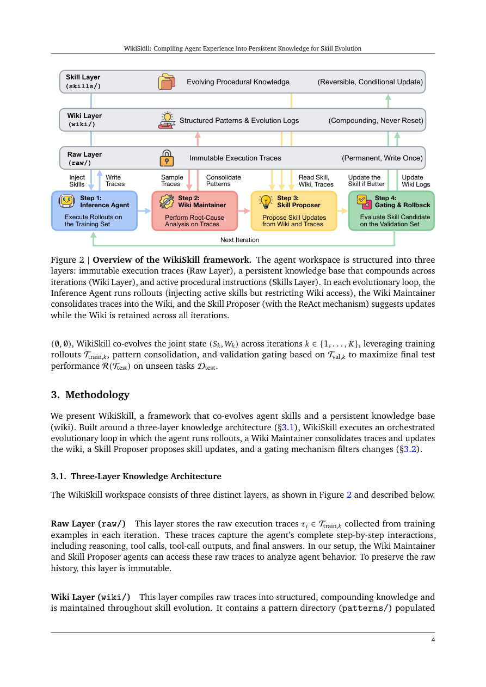

#1
★ 8/10
WikiSkill: Compiling Agent Experience into Persistent Knowledge for Skill Evolution
WikiSkill: Compiling Agent Experience into Persistent Knowledge for Skill Evolution

图 Figure · Page 4 of paper
🎯 （AI 中文深度分析暂不可用：Anthropic API 额度不足。英文栏为论文原文摘要，下方链接均可正常访问。）
Agent skills package specialized knowledge and workflows into reusable resources that extend AI agent capabilities
| 维度 | 中文 | English |
|---|---|---|
| ❓ 待解决 的问题 |
（AI 中文深度分析暂不可用：Anthropic API 额度不足。英文栏为论文原文摘要，下方链接均可正常访问。） | Agent skills package specialized knowledge and workflows into reusable resources that extend AI agent capabilities. Recent work automatically discovers such skills from agent experience, which enables agents to progressively adapt through interaction. However, the insights that guide skill development typically remain scattered across optimization histories, limiting their systematic reuse across iterations. We introduce WikiSkill, a framework that co-evolves agent skills with a persistent knowledge base (wiki). At a high level, WikiSkill separates raw execution experience, accumulated knowledge, and executable skills, while continuously consolidating experience into the wiki, which subsequent skill updates can build on. Across diverse benchmarks and models, WikiSkill consistently outperforms state-of-the-art skill-evolution methods and improves over no-skill baselines in most model-benchmark settings. We find that skill evolution complements model scaling: larger models generally benefit more from evolved skills, while smaller models with skills can outperform substantially larger models without them. We also find that evolved skills transfer effectively across models and model families, and skills evolved by other models can outperform self-evolved skills. Finally, our ablation studies confirm that persistent knowledge accumulation in the wiki is critical for effective skill evolution. These results demonstrate the benefits of systematically accumulating and refining agent experience for developing reusable and transferable skills. |
| 💡 解决 的亮点 |
（AI 中文深度分析暂不可用：Anthropic API 额度不足。英文栏为论文原文摘要，下方链接均可正常访问。） | See the paper’s original abstract in the "Problem / 背景" row above. |
| 🧪 实验 内容 |
（AI 中文深度分析暂不可用：Anthropic API 额度不足。英文栏为论文原文摘要，下方链接均可正常访问。） | See the paper’s original abstract in the "Problem / 背景" row above. |
| 📊 实验 结果 |
（AI 中文深度分析暂不可用：Anthropic API 额度不足。英文栏为论文原文摘要，下方链接均可正常访问。） | See the paper’s original abstract in the "Problem / 背景" row above. |
| 🏁 结论 | （AI 中文深度分析暂不可用：Anthropic API 额度不足。英文栏为论文原文摘要，下方链接均可正常访问。） | See the paper’s original abstract in the "Problem / 背景" row above. |
| 🔗 论文 链接 |
arXiv: 2608.27454v1 · 📥 PDF | |
⚙️ Method · 方法详解
（AI 中文深度分析暂不可用：Anthropic API 额度不足。英文栏为论文原文摘要，下方链接均可正常访问。）
See the paper’s original abstract in the "Problem / 背景" row above.
🌟 Why It Matters · 为什么重要
（AI 中文深度分析暂不可用：Anthropic API 额度不足。英文栏为论文原文摘要，下方链接均可正常访问。）
See the paper’s original abstract in the "Problem / 背景" row above.